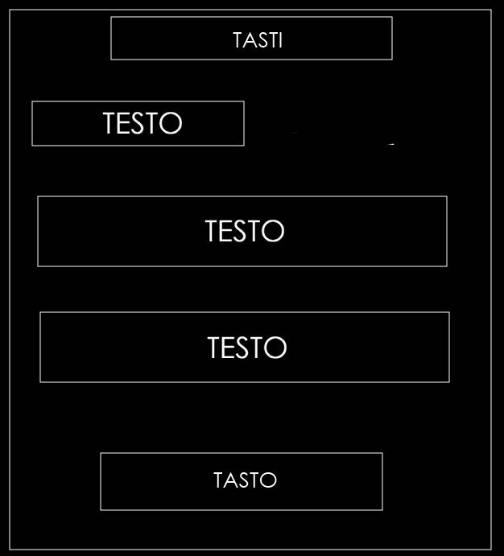
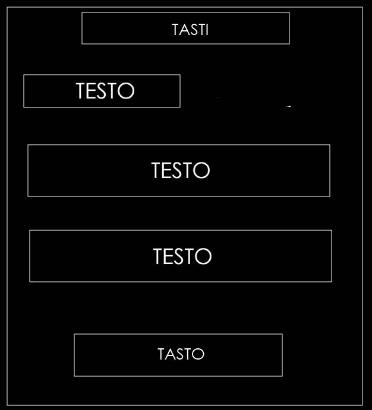
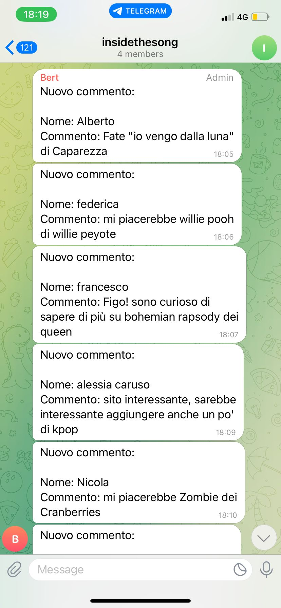

Inside the song è un sito che permette agli utenti di accedere in maniera semplice e veloce a tutte le informazioni riguardanti il brano cercato, è pensato per chiunque voglia delle informazioni verificate e sicure sui propri brani preferiti, il tutto unito a una interfaccia semplice e veloce e a un servizio clienti sempre attivo.
Nella versione 1.0 le schede di analisi vengono aggiornate settimanalmente in base alle richieste dei nostri utenti, con la versione 2.0 il sito potrà avvalersi di una innovativa IA che sarà in grado di fornire le schede di analisi in tempo reale.
Inside the song si rivolge a chi vuole saperne di più sulle canzoni che ascolta, a chi non si accontenta solo di una comprensione superficiale del testo o dell’argomento trattato ma vuole sapere anche i retroscena e le curiosità sulle sue canzoni preferite.
Perché scegliere inside the song?
Rispetto ai nostri competitor proponiamo una visione differente che pone al primo posto un'interfaccia semplice e efficace con un servizio sempre aggiornato in base ai feedback della nostra community.
Dall’analisi svolta abbiamo riscontrato 3 principali competitor:
Inside the song, mettendo al primo posto l'utente, si propone come un servizio web con un chiaro obiettivo: far emergere i retroscena nascosti delle nostre canzoni preferite.


.png) 



Per Inside the song abbiamo deciso di puntare su uno stile semplice e minimalista con un tema scuro che esalta le funzioni del nostro sito web.
Il font scelto è il Century Gothic che, grazie alle sue caratteristiche, come ad esempio la mancanza di grazie, si sposa bene con lo stile scelto per il sito, inoltre abbiamo deciso di creare continuità nelle pagine inserendo un tocco di colore nelle icone, nei link e in altri elementi.
Per la creazione di questo sito web sono stati utilizzati i seguenti linguaggi web:
Inoltre, a supporto della progettazione web sono stati utilizzati:
Dopo un'attenta analisi abbiamo deciso di attuare una strategia comunicativa in 4 parti:
Analizzando l'affluenza sul sito web, abbiamo riscontrato che una percentuale rilevante delle visite deriva dai link lasciati sulle pagine social che, dopo una rapida espansione nei primi giorni data presumibilmente dai punti 1 e 4, è rallentata attestandosi su una media di 2-3 follower al giorno.
Concludendo, possiamo affermare che i punti 1, 2 e 3 hanno permesso un aumento diretto delle visite al sito mentre il punto 4 ha portato un aumento significativo sulle pagine social e quindi solo indirettamente sul sito.
Il target a cui ci rivolgiamo è un target esigente, diviso in più coorti demografiche, formato da individui che, in ambito musicale, non si accontentano di una conoscenza di superficie ma cercano delle informazioni specifiche e verificate con cui arricchire la propria conoscenza sul brano.
Essendo un target molto vasto abbiamo deciso di concentrarci di più su quelle fasce di età che genericamente sono più coinvolte online attuando strategie di comunicazione che puntano a individui tra i 18 e i 25 anni.
Per questo motivo abbiamo deciso di rendere il sito consultabile anche da mobile puntando su un architettura responsiva; questa scelta, alla luce delle prime settimane di analisi, si è rivelata efficace poichè abbiamo riscontrato che la maggioranza degli utenti acceda al nostro sito da mobile.
Per fare questo abbiamo deciso sui social di usare una campagna che riflette lo slogan del sito “your only chance to seem cooler when talking music” usando meme e reel come mezzo di comunicazione prediletto per colpire il target; inoltre distribuendo i nostri volantini all’interno delle aule studio e dei bar ci siamo assicurati di colpire anche quegli utenti che non ci avrebbero conosciuto direttamente attraverso i social.
Inside the song si propone di essere il mezzo di informazione prediletto per chi cerca informazioni sui propri brani preferiti puntando tutto sulla semplicità dell’interfaccia e sulla qualità delle informazioni e portando sempre aggiornamenti e migliorie al fine di far scoprire qualcosa in più sui dietro le quinte delle canzoni che ascoltiamo quotidianamente.
Per promuovere il nostro sito abbiamo deciso di attuare una strategia di comunicazione su tre fronti:
Al momento su Instagram sono stati raggiunti 400 account di cui solo 58 sono diventati follower contro i 100 che ci eravamo posti come obiettivo (dati Meta Analytics).
Questa campagna di marketing tuttavia, ha soddisfatto le nostre aspettative per quanto riguarda l’affluenza sul sito web che porta in questo momento (22/05/23) 86 nuovi utenti in più dei 100 che ci eravamo posti come obiettivo e più di 7000 eventi (7100) con una permanenza media sul sito di 5 minuti (Google Analytics).
Va inoltre menzionato un notevole numero di interazioni che supera decisamente le aspettative con la chat del sito che attesta in questo momento circa 120 commenti tra consigli, richieste e opinioni.
